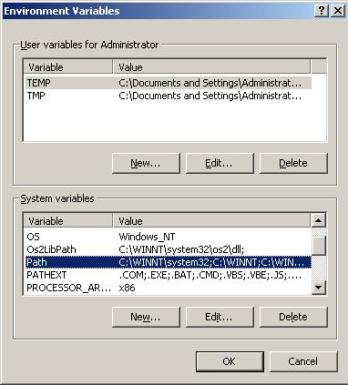

| 1. Open control panel and double
click on the System icon
2. The System Properties dialog box opens. Click on the
Advanced Sheet.
3. Click on Environment Variables (Work slowly and very
carefully)

4. Click on the Path System variable.
Click on Edit. Press the right arrow key to move your cursor
to the end of the existing variable value, and type
;c:\Borland\Bcc55\bin in the text box as shown (make sure
you add this text - don't replace the existing variable
value!):

5. Click OK to close the Edit System Variable dialog
box
6. Click OK to close the Advanced Sheet
7. Click OK to the System Properties dialog box
|